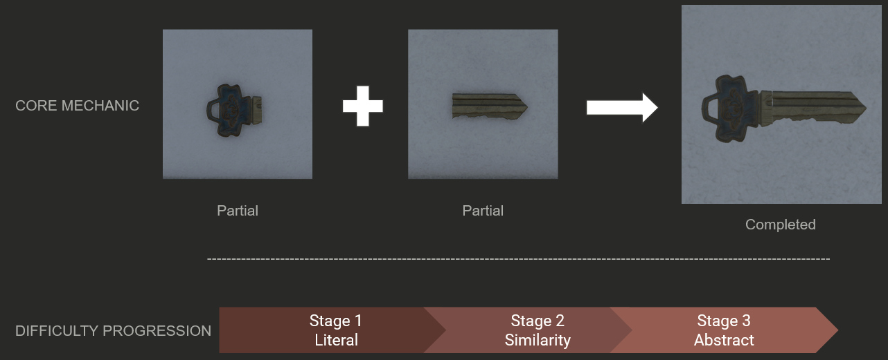
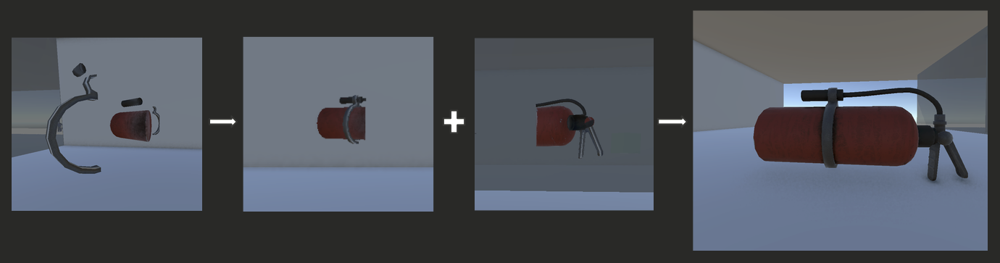
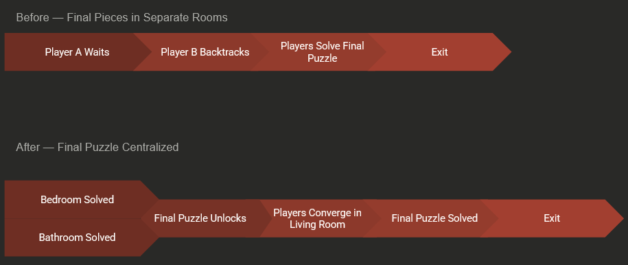
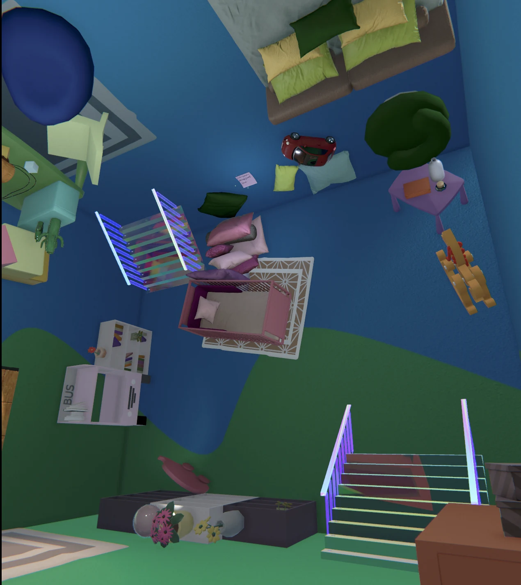

Creative Thinking
Perspective-based puzzles built around shape recognition, silhouettes, and optical illusions.
A local split-screen puzzle game where two players explore an impossible house and solve visual puzzles by combining objects, perspectives, and communication.
The Unrealtor is a local cooperative puzzle game built by a team of roughly 30. Two players share the same strange house but view the world through separate split-screen perspectives, creating puzzles around what each player sees and how they communicate.
My work focused on puzzle design and level design: developing perspective-based puzzle ideas, refining progression and pacing, and shaping spaces so the environment supported both discovery and readability.
The game needed a clear identity that could support an unfamiliar co-op mechanic without making the experience feel purely abstract.
Perspective-based puzzles built around shape recognition, silhouettes, and optical illusions.
Both players share the same space and solve problems through observation, discussion, and coordination.
A playful take on the stress and absurdity of searching for a new home.
Surreal spaces connect in unexpected ways and reinforce the house's unstable visual identity.
The core mechanic asks players to combine two visual fragments into a complete object. Early puzzles use literal halves; later puzzles rely more heavily on silhouette similarity, viewing angle, and abstraction.

A puzzle built to teach that an object may only become meaningful from the correct viewing angle.

A fire blocks progression, but the extinguisher is not presented as a complete object. Each half is made from scattered pieces that initially read as visual noise.
Players move around the fragments until they discover an angle where the pieces align into a recognizable half. Each player finds one half, communicates their view, and then both align the two halves at the split-screen boundary.
I implemented a quad-based alignment check for each puzzle half. Transform matrices convert the quad vertices into screen-space positions, then the system compares the two projected shapes using configurable thresholds.
The endgame flow was redesigned around co-op pacing rather than simply placing the final pieces where their prerequisite puzzles ended.
The final puzzle pieces were placed in separate side rooms. After discovering both halves, one player had to stay in place while the other traveled back through the living room to reach the opposite room.
I moved the final interaction into the living room. The bedroom and bathroom still gate progression, but both players now converge on the final puzzle together instead of creating idle time.


I redesigned the Children's Bedroom around the feel of a playful daycare space, using bright furniture, oversized forms, and exaggerated scale to give the room a distinct identity.
Because players need to search the environment for puzzle pieces, I kept the large background shapes simple and readable. The environment could still feel colorful and playful without competing with the objects players needed to notice.
Working on The Unrealtor changed how I think about scope, unfamiliar mechanics, and where complexity adds the most value.
A smaller, polished experience is stronger than a larger collection of ideas that do not have enough time for iteration and refinement.
Because players had little prior experience with this kind of co-op puzzle, simpler puzzles often communicated the core mechanic more effectively and created a stronger foundation for later complexity.
If I continued developing the concept, I would explore more variations and twists on the perspective-matching mechanic before adding more environmental complexity.